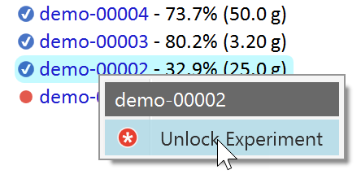

9) Finalize Experiment
Once an experiment is completed, it is good practice to mark it as finalized for following reasons:
- In the experiments navigation tree, you can easily distinguish between experiments in progress and completed ones. Unfinalized experiments are marked by a red dot, finalized ones by a blue checkmark:
- Finalized experiments are read-only to protect them against accidental changes. They still can be cloned, and it's still possible to open (but not to change) the reaction sketch, e.g. to see more detail or for copying its contents.
- If optionally connected to the Phoenix ELN server database, only finalized experiments are visible to other users, unfinalized ones are considered work in progress.
Finalizing an experiment is straightforward, just click the Finalize button in its header.
Then enter your user password, as specified when initially creating your own username.
Finalizing experiments is reversible. Finalized experiments can be unlocked from the experiment navigation tree. Unlocked experiment are marked by a red star icon and are not considered as finalized anymore. Therefore they should be finalized immediately after the pending changes were applied.

Due to the relevance of experiment finalization, the status side bar of Phoenix ELN reminds you to finalize experiments whenever more than 7 unfinalized experiments are present: